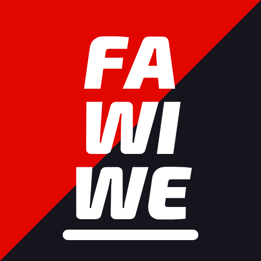

Juego de Fórmula 1 gratis y en español: sé ingeniero, jefe de equipo o piloto en cualquier temporada de 1950 a 2026. Minijuegos, carreras en vivo, multijugador y funciona en PC y celular. Creado por Miluchino.
▶ JUGAR Creado por Miluchino · Hecho con la ayuda de Claude · Proyecto de fan, sin relación oficial con la Fórmula 1.